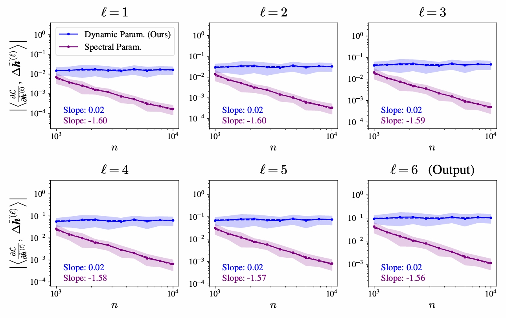

Technical Interests (including topics for future study)
機械学習，深層学習，人工知能，統計的学習理論，関数解析・カーネル法，統計神経力学，Neural Tangent Kernel・μP，特徴学習，良性過学習，数理脳科学，情報幾何学，ランダム行列理論，情報理論，測度論，最適輸送，連続最適化，転移学習・ドメイン汎化・分布外汎化・共変量シフト，etc．
Research


Bachelor Thesis
中間層のニューロン数が層によって異なるオーダーを持つ深層ニューラルネットワークの学習ダイナミクスの解析
Abstract: 層ごとに幅のオーダーが異なる (ボトルネック構造などを持つ) 深層ニューラルネットワークにおいて，学習が安定する条件を導出． 信号伝播のオーダー評価を行い，パラメータの更新量がネットワーク内の最小の層幅に制約されるという規則を特定．これに基づき，初期化と学習率等を動的に調整する手法 Dynamic Parametrization を提案．


Experience
2025.04 - Current
2025 - Present
Research Assistant (K Program)
経済安全保障重要技術育成プログラム (K-Program)
Program Website
LLMのセキュリティ評価・レッドチーミング技術の開発に従事．
2025 - Current
Skills & Certifications
Certifications
- 応用情報技術者 [2023.06]
- 普通自動車第一種免許 [2021.09]
Technical Skills
Recognition
-
2025.03
工学部 最優秀学生賞
-
2025.03
2024年度 電子情報通信学会九州支部 成績優秀賞
-
2024.12
令和5年度 基礎科学 (数学) 成績優秀者
-
2024.09
成績優秀者 給付奨学金 (学部3年次成績)
-
2023.09
成績優秀者 給付奨学金 (学部2年次成績)
-
2022.09
成績優秀者 給付奨学金 (学部1年次成績)